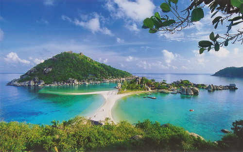

เกาะนางยวน
เกาะนางยวน ประกอบด้วยเกาะขนาดเล็ก 3 เกาะซึ่งเชื่อมต่อกันด้วยสันทรายในลักษณะเหมือนทะเลแหวก เสน่ห์ของเกาะนางยวน น้ำทะเลสีมรกตที่ใสจนมองเห็นตัวปลาตัวเล็กตัวน้อย เปลือกหอย และปะการัง กิจกรรมสุดฮิตของที่นี่คือ การดำน้ำดูปะการังและปลาสวยงาม เล่นน้ำริมหาด

เกาะพงัน
เกาะพะงัน เป็นเกาะในอ่าวไทย ตั้งอยู่ทางตะวันออกเฉียงใต้ของประเทศไทย ในจังหวัดสุราษฎร์ธานี เป็นส่วนหนึ่งของอำเภอเกาะพะงัน มีชื่อเสียงจากงานฟูลมูนปาร์ตี้ ที่จัดขึ้นที่หาดริ้น และเป็นจุดหมายปลายทางของแบ็กแพ็กเกอร์